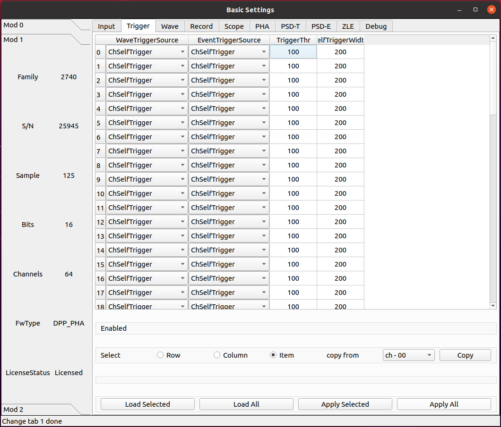
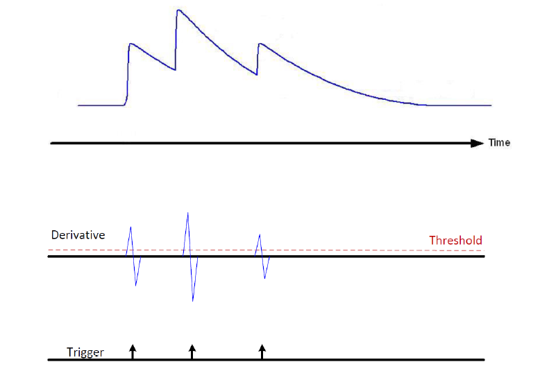
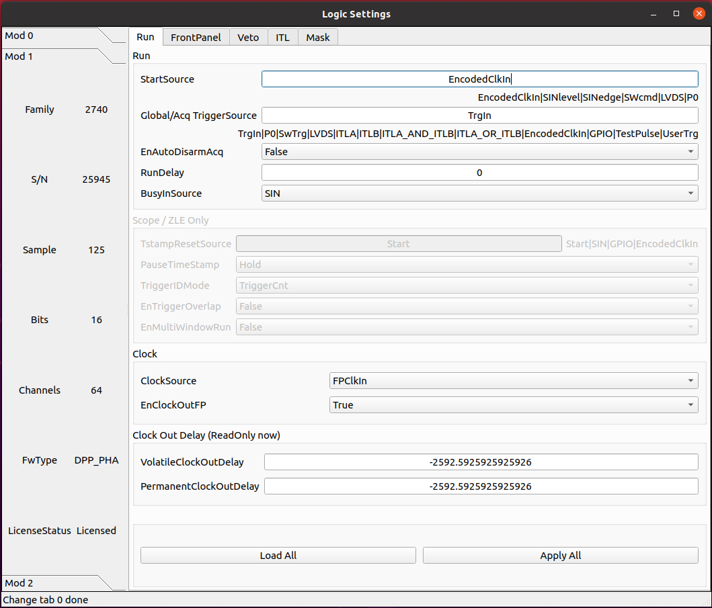

PHA firmware
Basic
Input

parameter ChGain
Unique to x2730.
Sets the gain of the Variable Gain Amplifiers (VGA). Unit of Measure: dB
parameter InputDelay
Set input delay. The value is set at groups of 4 channels for x2745/x2740.
Unit: sample
parameter ChEnable
Enable the channels for the acquisition, according to the Index. When the channel is disabled, it does not give any data and its self-trigger is off.
True: The channel is enabled for the acquisition
False: The channel is disabled for the acquisition
parameter WaveSource
In normal mode, the acquired waveform represents a sequence of ADC samples, resulting from the A/D conversion of the analog input. For test purposes, it is possible to replace the ADC data with internal data generators.
- ADC_DATA
Data from the ADC (normal operating mode)
- ADC_TEST_TOGGLE
Toggle between 0x5555 and 0xAAAA (test mode)
- ADC_TEST_RAMP
16-bit ramp pattern (test mode)
- ADC_TEST_SIN
8-point sine wave test pattern
- ADC_TEST_PRBS
16-bit PRBS generated by a 23-bit PRBS pattern generator (test mode)
- Ramp
Data from a ramp generator. It is actually a 16-bit field, where the 6 most significant bits identify the channel and the 10 less significant bits are the samples of a ramp from 0x000 up to 0x3FF (i.e. 0 to 1023). It is so a 10-bit ramp with offset given by “channel*1024”. For channel 0, it is a counter from 0 to 1023; for channel 1, it is a counter from 1024 to 2047, and so on
- IPE
Not implemented
- SquareWave
Internally generated programmable square wave
parameter DCOffset
A constant DC offset (controlled by a 16-bit DAC) is added to the analog input, individually for each channel, to adjust the position of the signal baseline (that is the “zero volt” of the analog input) within the dynamic range of the ADC. Because of the tolerance of the components, it is necessary to calibrate the offset DAC. The calibration is done by factory testing and normally it is not necessary to recalibrate the digitizer. It is however possible to perform a new calibration. The calibration parameters are stored in the flash memory of the board and loaded at power on. They are automatically applied by the internal logic every time the DCoffset parameter is written or read. DCoffset is expressed as a NUMBER number, in percent of the full-scale. When the DCoffset is 0, the baseline of the input signal is at 0 ADC counts. When the DCoffset is 100, the baseline of the input signal is at $2^{NBIT}-1$ ADC counts.
parameter Polarity
Allows to set the polarity of the input pulse.
- Positive
Positive polarity
- Negative
Negative polarity
parameter VGAGain
Unique to x2745.
Set the gain of the variable gain amplifier (VGA) in increments of 0.5 dB. Parameter settings are grouped every 16 channels, with 64 channels divided into 4 groups. The minimum can be set to 0 and the maximum to 40.
Trigger
parameter WaveTriggerSource
Allows to set the trigger source for the waveform. Setting this parameter means to get an event including the waveform and the associated time stamp and energy information..
- Disabled
No trigger source enabled for the waveform
- Ch64Trigger
One (or more) channel self-trigger can generate a trigger for a waveform
- ChSelfTrigger
Channel self-trigger can generate a trigger for a waveform
- SwTrg
Software Trigger can generate a trigger for a waveform
- ADCOverSaturation
ADC Oversaturation can generate a trigger for a waveform
- ADCUnderSaturation
ADC Undersaturation can generate a trigger for a waveform
- ExternalInhibit
Inhibit can generate a trigger for a waveform
- TRGIN
External TRGIN can generate a trigger for a waveform
- GlobalTriggerSource
Acquisition Trigger Source (the same of the Scope mode) can generate a trigger for a waveform
- LVDS
A signal on the LVDS connectors can generate a trigger for a waveform
- ITLA
Internal Trigger Logic A can generate a trigger for a waveform
- ITLB
Internal Trigger Logic B can generate a trigger for a waveform
parameter EventTriggerSource
Allows to set the trigger source for a Time-Energy (T-E) event. Setting this parameter means to get an event including time stamp and energy information
- Disabled
No trigger source enabled for the T-E event
- Ch64Trigger
One (or more) channel self-trigger can generate a trigger for a T-E event
- ChSelfTrigger
Channel self-trigger can generate a trigger for a T-E event
- SwTrg
Software Trigger can generate a trigger for a T-E event
- TRGIN
External TRGIN can generate a trigger for a T-E event
- GlobalTriggerSource
Acquisition Trigger Source (the same of the Scope mode) can generate a trigger for a T-E event
- LVDS
A signal on the LVDS connectors can generate a trigger for a T-E event
- ITLA
Internal Trigger Logic A can generate a trigger for a T-E event
- ITLB
Internal Trigger Logic B can generate a trigger for a T-E event
parameter TriggerThr
Each channel of the digitizer has a digital leading-edge discriminator with programmable threshold able to self-trigger on the input pulses and generate a self-trigger signal (or an overthreshold signal) feeding the internal trigger logics or digitizer outputs. This parameter sets the trigger threshold. Typically, the value is relative to the baseline of the signal and the threshold is a 17-bit signed NUMBER number; in this case, the threshold automatically follows the baseline when the DCoffset parameter changes. Sometimes, it is preferable to set an absolute value for the threshold, referred to the ADC range. In this case, the threshold is unsigned NUMBER number.
Unit of Measure: ADC counts
parameter SelfTriggerWidth
The output of the digital leading-edge comparator, that generates the self-trigger signal, can be used in “linear” mode, meaning that it lasts for the time the signal remains above (or below) the threshold, thus acting as an “Over-Threshold” signal, or can pass through a programmable gate generator that makes it a fixed-width pulse. The gate generator is a non-retriggerable monostable that goes high when the threshold is crossed and returns low after the programmed time. This parameter defines the fixed width of the overthreshold pulse.
Unit of Measure: ns
Wave

parameter PreTrigger
Time coming before the position of the trigger in the waveform (i.e. size of the pre-trigger window).
Unit of Measure: ns
parameter RecordLength
The waveform size. Integer representing the time in ns. The actual size of the waveform will be automatically rounded to the closest allowed value. It is possible to get the exact size by reading back the parameter. The record length in time depends on wave resolution.
Unit of Measure: ns
parameter DownsampingFactor
Downsampling factor for the waveform resolution.
- 1
x1
- 2
x2
- 4
x4
- 8
x8
parameter Analog0/1
Waveform Analog Probe0/1
- ADCInput
ADC input probe
- TimeFilter
Time Filter probe
- EnergyFilter
Energy Filter probe
- EnergyFilterBaseline
Energy Filter Baseline
- EnergyFilterMinusBaseline
[Energy Filter – Baseline] probe
parameter Digital0/1/2/3
Waveform Digital Probe
- Trigger
Trigger probe
- TimeFilterArmed
Time Filter Armed probe
- ReTriggerGuard
ReTrigger Guard probe
- EnergyFilterBaselineFreeze
Energy Filter Baseline Freeze probe
- EnergyFilterPeaking
Energy Filter Peaking probe
- EnergyFilterPeakReady
Energy Filter Peak Ready probe
- EnergyFilterPileupGuard
Energy Filter Pile Up Guard probe
- EventPileUp
Event Pile Up probe
- ADCSaturation
ADC Saturation probe
- ADCSaturationProtection
ADC Saturation Protection probe
- PostSaturationEvent
Post Saturation Event probe
- EnergyFilterSaturation
Energy Filter Saturation probe
- AcquisitionInhibit
Acquisition Inhibit probe
Record

parameter EventSelector
Allows to set which events have to be saved.
- All
All events are saved
- PileUp
Only pileup events are saved
- EnergySkim
Save only the events in the Energy Skim range
parameter WaveSelector
Allows to set which waveform have to be saved.
- All
All waves are saved
- PileUp
Only pileup waves are saved
- EnergySkim
Save only waves in the Energy Skim range
parameter EnergySkimLowDiscriminator
Allows to flag events with energy higher than the low skim threshold. 16-bit value.
Unit of Measure: bin
parameter EnergySkimHighDiscriminator
Allows to flag events with energy lower than the high skim threshold. 16-bit value.
Unit of Measure: bin
parameter WaveSaving
Allows to save waveforms always or on request only.
- Always
Waveforms are always saved
- OnRequest
Waveforms are saved on request
parameter EnDataReduction
If enabled, events consisting of 2 words are compressed in a single word event.
- True
Option enabled
- False
Option disabled
PHA

parameter TriggerTriangular
The x27xx digitizer running the DPP firmware discriminates events based on a triangular signal, whose rise time can be defined by the user. The TriggerThreshold is then referred to the derivative of the triangle itself, and the threshold crossing arms the event selection. The trigger fires at the zero crossing of the derivative signal itself. This parameter allows to set the rise time of the time filter.
Unit of Measure: ns
parameter RetriggerGuard
In case of fast signal such as those coming from PMTs possible overshoots in the fast discriminator signal may occur causing a retrigger and so possible fake pile-up. This parameter allows to set a retrigger inhibit guard (in ns). 10-bit value.
Unit of Measure: ns
parameter PileupGuard
If two events are separated by less than the trapezoid duration, then the relevant trapezoids overlap. The trapezoid duration is defined as RT + FT + PileUpGuard, where RT is the trapezoid Rise Time, FT is the trapezoid Flat Top, the PileUpGuard starts at the end of the Peaking time (see EnergyFilterPeakingPosition). This parameter allows to set the trapezoid filter pileup guard (in ns). 10-bit value.
Unit of Measure: ns
parameter BaselineAvg
Allows to enable a low-frequency filter for the energy filter
- Fixed
Baseline fixed at 0
- VeryLow
Baseline samples for average = 16
- Low
Baseline samples for average = 64
- MediumLow
Baseline samples for average = 256
- Medium
Baseline samples for average = 1024
- MediumHigh
Baseline samples for average = 4096
- High
Baseline samples for average = 16384
parameter BaselineGuard
In addition to the Baseline Average, the user can also set the Baseline Hold-Off or Baseline Guard value to freeze the baseline calculation beyond the trapezoid end, thus reducing the noise on the baseline calculation. This parameter allows to set the trapezoid filter baseline protection after peak (in ns). 10-bit value.
Unit of Measure: ns
parameter EnergyRiseTime
The digitizer x27xx running the DPP-PHA firmware evaluates the energy value using a Trapezoidal filter. As in the traditional analog chain, the Shaping Amplifier is able to convert the exponential shape from the Charge Sensitive Preamplifier into a Gaussian shape whose height is proportional to the pulse energy, in the same way the Trapezoidal filter is able to transform it into a trapezoidal signal whose amplitude is proportional to the input pulse height (energy). In this analogy, the Energy Filter Rise Time corresponds to the Shaping Time times a factor of 2/2.5.
Unit of Measure: ns

parameter EnergyFlatTop
The energy value of the input pulse is evaluated as the height of the trapezoid in its Flat Top region. The user must take care that the flat top is really flat and that the Peaking (i.e. the samples used for the energy calculation) is in the flat region. Moreover the correct setting of flat top and peaking helps in the correct evaluation of the energy especially when large volume detectors are involved and the ballistic deficit may cause a significant error in the energy calculation. In this case it may be convenient to increase the flat top duration and delay the peaking time to wait for the full charge collection. This parameter allows to set the trapezoid flat top (in ns or samples). 9-bit value.
Unit of Measure: ns
parameter PoleZero
Like the Gaussian pulse of the Shaping Amplifier, also the trapezoid requires an accurate pole-zero adjustment to guarantee the correct return to the baseline at the end of the falling edge. To correctly set the pole-zero the user must take care of setting the proper Trapezoid Decay Time value (which corresponds also to the Input Decay Time) to avoid either undershoot or overshoot effects. Pole Zero Adjustment can reduce signal artifacts due to pulses pile up occurring when the counting rate is high compared to the pulse decay.
Unit of Measure: ns

parameter PeakingPosition
The trapezoid Peaking Position in percentage (%) of the flat top.
Unit of Measure: %
parameter PeakingAvg
The number of samples used to evaluate the peak.
- OneShot
1 sample
- LowAVG
4 samples
- MediumAVG
16 samples
- HighAVG
64 samples
parameter FineGain
Allows to set the energy fine gain. The energy fine gain is a digital multiplication factor and does not change the Full Scale Range. 16-bit value.
Increment: 0.001
parameter LFLimitation
Allows to enable a low-frequency filter for the energy filter
- On
Enabled
- Off
Disabled
Debug

parameter TestPulsePeriod
The Test Pulse is a programmable square wave that can be used as an internal periodic trigger (mainly for test purposes) or to generate a logic test pulse (TTL or NIM) on the TRGOUT and GPIO outputs. This parameter sets the period of the Test Pulse.
Unit of Measure: ns
parameter TestPulseWidth
Width of the Test Pulse (time that the signal stays high = 1).
Unit of Measure: ns
parameter TestPulseLowLevel
Low level of the Test Pulse expressed in ADC counts
Unit of Measure: ADC counts
parameter TestPulseHighLevel
High level of the Test Pulse expressed in ADC counts
Unit of Measure: ADC counts
parameter DACoutMode
Selects the signal type to be sent in output on the front panel DAC connector.
- Static
DAC output stays at a fixed level, given by the DACoutStaticLevel parameter
- Ramp
The DAC output is driven by a 14-bit counter
- Sin5MHz
The DAC output is a sine wave at 5 MHz with fixed amplitude
- Square
Square wave with period and with set by TestPulsePeriod and TestPulseWidth and amplitude between TestPulseLoweLevel and TestPulseHighLevel.
- IPE
Not implemented
- ChInput
The DAC reproduces the input signal received by one input channel, selected by the DACoutChSelect parameter
- MemOccupancy
Level of the memory occupancy (not yet implemented)
- ChSum
The DAC reproduces the “analog” sum of all the digitizer inputs (not yet implemented)
- OverThrSum
The DAC output is proportional to the number of channels that are currently above the threshold
parameter DACoutStaticLevel
When DACoutMode = Static, this parameter sets the 14-bit level of the DAC static output.
parameter DACoutChSelect
When DACoutMode = ChInput, the DAC reproduces the input signal of the channel selected by this parameter.
parameter IPEAmplitude
The new digitizers are equipped with an Internal Pulse Emulator capable of generating exponential pulses. This parameter determines the amplitude of the pulse.
Unit of Measure: ADC counts
parameter IPEBaseline
Sets the offset of the exponantial pulses generated by the Internal Pulse Emulator.
Unit of Measure: ADC counts
parameter IPEDecayTime
Sets the decay time of the exponantial pulses generated by the Internal Pulse Emulator.
Unit of Measure: ns
parameter IPERate
Sets the rate of the exponantial pulses generated by the Internal Pulse Emulator.
Unit of Measure: Hz
parameter IPETimeMode
Selectes the time distribution of the Internal Pulse Emulator.
- ConstantRate
Pulse shapes are constant over time. It is possible to set the frequency using the IPERate parameter
- Poissonian
The pulse rate follows a Poisson distribution. The average frequency value can be configured using the IPERate parameter
Logic
Run
parameter StartSource
Defines the source for the start of run. Multiple options are allowed, separated by “|”.
- EncodedClkIn
Start from CLK-IN/SYNC connector on the front panel. This is a 4-pin connector (LVDS signals) used to propagate the reference clock (typ. 62.5 MHz) and a Sync signal. The rising edge of the Sync starts the acquisition, that lasts until the Sync returns low (falling edge).
- SINlevel
Start from SIN (1=run, 0=stop)
- SINedge
Start from SIN (rising edge = run; stop from SW)
- SWcmd
Start from SW
- LVDS
Start from LVDS
- P0
Start from P0 (backplane)
parameter GlobalTriggerSource
Defines the source for the Acquisition Trigger, which is the signal that opens the acquisition window and saves the waveforms in the memory buffers. Multiple options are allowed, separated by “|”.
- TrgIn
Front Panel TRGIN
- P0
Trigger from P0 (backplane)
- SwTrg
Software trigger
- LVDS
LVDS trgin
- ITLA
Internal Trigger Logic A: combination of channel self-triggers
- ITLB
Internal Trigger Logic B: combination of channel self-triggers
- ITLA_AND_ITLB
Second level Trigger logic making the AND of ITL A and B
- ITLA_OR_ITLB
Second level Trigger logic making the OR of ITL A and B
- EncodedClkIn
Not implemented (encoded CLK-IN trigger)
- GPIO
Front Panel GPIO
- TestPulse
Internal Test Pulse
- UserTrg
User custom trigger source
parameter EnAutoDisarmAcq
When enabled, the Auto Disarm option disarms the acquisition at the stop of run. When the start of run is controlled by an external signal, this option prevents the digitizer to restart without the intervention of the software.
- True
The acquisition is automatically disarmed after the stop. It is therefore necessary to rearm the digitizer (with the relevant command sent by the software) before starting a new run.
- False
The acquisition is not disarmed after the stop. Multiple transition of the start signal will produce multiple runs.
parameter RunDelay
When the start of run is controlled by a RUN signal that is propagated in daisy chain between the boards (for instance through the ClkIn- ClkOut or SIN-GPIO sync chain), it is necessary to compensate for the propagation delay and let the boards start exactly at the same time. The RunDelay parameter allows the start of the acquisition to be delayed by a given number of clock cycles with respect to the rising edge of the RUN signal. Assuming that the propagation delay is 2 cycles, the RunDelay setting will be 0 for the last board in the chain, 2 for the previous one, and so on up 2x(NB-1) for the first one.
Unit of Measure: ns
parameter BusyInSource
In a multi-board system, it might be necessary to prevent one board to accept a new trigger while another board is full and thus unable to accept the same trigger. For this reason, each board can generate a Busy signal to notify that it is unable to get a new trigger. If the busy/veto mechanism has some latency, it is advisable to generate the busy slightly before the digitizer become full. For this purpose, it is possible to assert the busy output when the acquisition memory reaches a certain level of occupancy (internally managed). The OR of the busy signals is typically used to stop the global trigger. It is possible to get the individual busy signals from each board and make an external OR logic or connect the boards with cables to propagate the Busy along the chain. Each board makes an OR between its internal busy and the busy input signal coming from the previous board, thus having a global Busy at the end of the line. This parameter defines the source of the Busy Input (schematized in the figure below)

- Disabled
The Busy is given by the Internal Busy only (Memory full or almost full)
- SIN
Busy input from SIN on front panel
- GPIO
Busy input coming from GPIO on front panel, used as a simple input. It is also possible to use GPIO as a wired OR (bidirectional). In this mode, the Busy line goes high as soon as one board drives it high. All the boards can read the Busy line and use it as a veto for the trigger
- LVDS
LVDS trgin
parameter ClockSource
This is the source of the system clock. Multiple options are not allowed
- Internal
Local oscillator, 62.5 MHz
- FPClkIn
Front Panel Clock input
parameter EnClockOutFP
Enables clock output on Front Panel for the daisy chain propagation of the clock between multiple boards.
- True
Enabled
- False
Disabled
FrontPanel

parameter TrgOutMode
Selects the signal that is routed to the TRGOUT output. Multiple options are not allowed.
- Disabled
TRGOUT output disabled
- TrgIn
Propagation of Front Panel TRGIN (TRGOUT is a replica, with some delay, of the TRGIN signal)
- P0
Propagation of P0 trigger
- SwTrg
Software trigger
- LVDS
LVDS trgin
- ITLA
Internal Trigger Logic A: combination of channel self-triggers
- ITLB
Internal Trigger Logic B: combination of channel self-triggers
- ITLA_AND_ITLB
Second level Trigger logic making the AND of ITL A and B
- ITLA_OR_ITLB
Second level Trigger logic making the OR of ITL A and B
- EncodedClkIn
Not implemented (propagation of the Encoded CLK-IN trigger)
- Run
Propagation of the RUN signal (acquisition start/stop), before applying the delay given by the RunDelay parameter
- RefClk
Monitor of the 62.5 MHz clock (used for phase alignment)
- TestPulse
Internal Test Pulse
- Busy
Busy of the board
- UserTrgout
Trgout coming from the User Logic (open FPGA)
- Fixed0
0 level signal
- Fixed1
1 level signal
- SyncIn
SyncIn signal
- SIN
SIN connector signal
- GPIO
GPIO connector signal
- LBinClk
Internal Logic B clock signal
- AcceptTrg
Accepted triggers signal
- TrgClk
Tigger clock signal
parameter GPIOMode
Selects the signal that is routed to the GPIO, when this is used as output. Multiple options are not allowed. The GPIO on the front panel is a bidirectional signal that can used in three different ways:
As independent board output (each board drives its own GPIO)
As a shared input for the boards: the signal is driven high (= 1) or low (= 0) by an external source and connected in “short circuit” among multiple boards using “T” connectors at the inputs. The GPIO is not internally terminated, thus it is necessary to put a 50 Ohm terminator at the end of the line (last “T”of the chain)
As a shared bidirectional line, making a “wired OR”. One or more boards can simultaneously drive the signal high (= 1). If no board drives the GPIO, it remains low (= 0). All boards can read back the signal. It is necessary to put a 50 Ohm terminator at both ends of the line (first and last “T” of the chain). This mode can be used to generate, for instance, the global Busy and Veto logic for multiple boards.
- Disabled
GPIO disabled
- TrgIn
Propagation of Front Panel TRGIN (GPIO is a replica, with some delay, of the TRGIN signal)
- P0
Propagation of P0 trigger
- SIN
Propagation of SIN
- LVDS
LVDS trgin
- ITLA
Internal Trigger Logic A: combination of channel self-triggers
- ITLB
Internal Trigger Logic B: combination of channel self-triggers
- ITLA_AND_ITLB
Second level Trigger logic making the AND of ITL A and B
- ITLA_OR_ITLB
Second level Trigger logic making the OR of ITL A and B
- EncodedClkIn
Not implemented (propagation of the Encoded CLK-IN trigger)
- SwTrg
Software trigger
- Run
Propagation of RUN
- RefClk
Monitor of the 62.5 MHz clock (used for phase alignment)
- TestPulse
Internal Test Pulse
- Busy
Busy of the board
- UserGPO
GPO coming from the User Logic (open FPGA)
- Fixed0
0 level signal
- Fixed1
1 level signal
parameter SyncOutMode
In a multi-board system, it can be useful to propagate a synchronous signal together with the clock (to synchronize the start of the run, for example) on CLK OUT front panel connector. This parameter defines which signal must be sent out. Multiple options are not allowed.
- Disabled
SyncoutMode is disabled
- SyncIn
SyncIn signal (if provided with clkIn on CLK IN connector)
- TestPulse
Internal Test Pulse
- IntClk
Internal 62.5 MHz clock (for test purposes)
- Run
Propagation of RUN signal
- User
User customSyncoutMode
parameter IOlevel
Sets the electrical logic level of the LEMO I/Os (TRGIN, SIN, TRGOUT, GPIO).
Note that TRGIN and SIN are internally terminated to 50 Ohm, while GPIO and TRGOUT require the termination to 50 Ohms at the receiver
- NIM
NIM logic (0 = 0V, 1 = -0.8V, that is -16mA)
- TTL
Low Voltage TLL logic (0 = 0V, 1 = 3.3V)
parameter LVDSDirection
Assigns the direction to a quartet of LVDS I/Os.
- Input
The LVDS lines of the relevant quartet are used as input. The relevant LED on the front panel is OFF.
- Output
The LVDS lines of the relevant quartet are used as output. The relevant LED on the front panel lights-up.
parameter LVDSMode
The digitizer is equipped with 16 LVDS I/Os that can be programmed to be inputs or outputs by groups of 4 (quartets), depending on the LVDSDirection parameter. Once the direction has been selected, it is possible to select the functionality of the LVDS lines, individually for each quartet.
- SelfTriggers
This option is available only when the LVDS are set as outputs. Each LVDS line can be assigned to a combination of the 64 self-triggers, implemented as a masked OR, where the mask is set by the LVDSTrgMask parameter(16 independent masks, one per LVDS line)
- Sync
Whatever is the direction of the quartet, the 4 lines are rigidly assigned to specific acquisition signals: 0 = Run 1 = Trigger 2 = Busy 3= Veto It is possible to implement a daisy chain distribution of these signals using one quartet as input and another one as output
- IORegister
The LVDS lines of the quartet are statically controlled by the LVDSIOReg parameter. Use the SetValue function to set the relevant LVDS lines when programmed as output. Use GetValue to read the status of the LVDS lines when programmed as inputs.
- User
User custom.
parameter LVDSTrgMask
Each LVDS line can be assigned to a combination of the 64 self-triggers, implemented as a masked OR, where the mask is set by this parameter. There are 16 independent masks, one per LVDS line. Note that the trigger mask assignment does not imply the LVDS direction and mode settings. It is therefore necessary to set the Direction = Output and Mode = SelfTriggers to use the Self-Trigger propagation to the LVDS I/Os.
parameter LVDSIOReg
Set the status of the LVDS I/O for the quartets when they are programmed to be output and Mode = IORegister. This parameter reads out the status of the quartets in the case the LVDS I/O are programmed as inputs (possibly externally driven).
Veto

parameter ChannelVetoSource
Allows to set the veto for each channel; it can be external (which means one of the veto options in the previous table), or it can be on a channel base.
- Disabled
Any channel veto source is disabled
- BoardVeto
Enables board veto
ADCOverSaturation: Enables veto due to ADC oversaturation
ADCUnderSaturation: Enables veto due to ADC undersaturation
parameter ADCVetoWidth
It is the width of the ADC veto (undersaturation and oversaturation width) expressed in ns.
Unit of Measure: ns
parameter VetoSource
Defines the source for the Veto, which is the signal that inhibits the acquisition trigger. Multiple options are allowed, separated by “|”. The VETO signal can be either active high or low, depending on the VetoPolarity parameter. When active low, it acts as a GATE for the trigger. It is possible to stretch the duration of the VETO by means of the parameter VetoWidth.
- Disabled
VETO is always OFF
- SIN
SIN on the front panel
- GPIO
GPIO on the front panel (used as input)
- LVDS
LVDS trgin
- P0
P0 (signal from the backplane)
- EncodedClkIn
Not implemented (encoded CLK-IN veto)
parameter VetoWidth
Whatever is the source of the VETO signal, it is possible to stretch the duration of the veto up to a given time by means of a re-triggerable monostable. When 0, the monostable is disabled and the veto lasts as long as the selected source is active.
Unit of Measure: ns
parameter VetoPolarity
Defines the polarity of the Veto
- ActiveHigh
Veto is active high. The signal acts as an “Inhibit” for the trigger
- ActiveLow
Veto is active low. The signal acts as a “Gate” the trigger
ITL


parameter ITLA/BMask
Enable Mask at the input of the ITLA/B.
parameter ITLA/BPairLogic
Pairs of channels can be combined with an OR or AND before feeding in the Main trigger Logic. This is typically used in the readout of tubes or scintillator bars, where the two ends are read in coincidence, for instance in position sensitive detectors (the coincidence window will be set by the SelfTriggerWidth parameter). When the AND/OR logic is applied, the two outputs of the Pair Logic blocks are identical.
Note that they are counted twice in the following Majority logic. If the Pair Logic is disabled (“NONE” option), the block is transparent, and the two outputs are just a replica of the inputs.
- OR
Both Pair Logic Outputs = OR of two consecutive self-triggers
- AND
Both Pair Logic Outputs = AND of two consecutive self-triggers
- NONE
Outputs = Inputs
parameter ITLA/BMainLogic
Each channel of the digitizer feature a digital bipolar triangular filter discriminator with programmable rise time and threshold able to self-trigger on the input pulses and generate a self-trigger signal. In DPP Mode, the channels acquire independently, so the channel self-trigger is used locally to acquire a waveform. The trigger threshold is then referred to the bipolar triangular filter, and the threshold crossing arms the event selection. The trigger fires at the zero crossing of the time filter signal. The user can see the derivative trace on the signal inspector. It is also possible to combine all the self-triggers of the board, according to a specific trigger logic. There are two independent logic blocks, ITLA and ITLB. Their output can be used separately to feed, for instance, AcqTrigger and TrgOut, or combined in a second level trigger logic to implement more complex trigger schemes. Therefore, the ITLs can either generate the local acquisition trigger, common to all the channels, for the acquisition of the waveform, or propagate the signal outside, through the TRGOUT, thus making it possible to combine triggers of multiple boards in an external trigger logic, that eventually feeds back the TRGIN of the digitizers. Each ITL is made of an input enable mask (64 bits, one per channel), an optional pairing logic that combines the self triggers of two consecutive channels (e.g. paired coincidence) and the main trigger logic that combines the 64 selftriggers with an OR, AND or Majority logic. The output can be linear (no stretching) or reshaped by a programmable gate generator, either re-triggerable or not and finally programmed for polarity (direct or inverted).
- OR
ITLOUT = masked OR of channel self-triggers
- AND
ITLOUT = masked AND of channel self-triggers
- Majority
ITLOUT = masked Majority of channel self-triggers
parameter ITLA/BMajorityLev
Defines the majority level of the Main Logic of the ITL A/B block. The majority output is calculated at every clock cycle, and it becomes TRUE when Nch >= MajLev, where Nch is the number of self-triggers active in that clock cycle and MajLev is the programmed majority level.
Note that when the Pair Logic is used to combine the self triggers two by two (AND/OR), each pair produces two identical signals that will be counted twice in the majority level.
parameter ITLA/BGateWidth
Width of the gate generator at the output of the ITLA/B block.
Unit of Measure: ns
parameter ITLA/BPolarity
Polarity of the gate generator output.
- Direct
Direct polarity
- Inverted
Inverted polarity
parameter ITLA/BEnRetrigger
Set the ITLA/B to be retriggerable.
- True
The ITLA/B is retriggerable
- False
The ITLA/B is not retriggerable
mask

parameter ITLConnect
Alternative to ITLAMask, ITLBMask. Determines if the channel partecipate in ITLA or ITLB
- Disabled
The channel is disabled
- ITLA
The channel participates in ITLA logic block
- ITLB
The channel participates in ITLB logic block
parameter ChannelsTriggerMask
Allows to set the mask over 64 bits to generate a channel trigger. It can be used to trigger a channel using a trigger coming from another channel. It also allows to set the mask over 64 bits to enable the channel to participate in the coincidence logic defined in CoincidenceMask and AntiCoincidenceMask (option Channel64Trg). 64-bit enable mask, each bit representing a channel.
parameter CoincidenceMask
Allows to set the coincidence mask that generates a trigger on the specified channel.
- Disabled
All the coincidence sources are disabled
- Ch64Trigger
One of the 64 channels can generate a coincidence signal
- TRGIN
TRGIN can generate a coincidence signal
- GlobalTriggerSource
Acquisition Trigger can generate a coincidence signal
- ITLA
ITLA can generate a coincidence signal
- ITLB
ITLB can generate a coincidence signal
parameter AntiCoincidenceMask
Allows to set the anticoincidence mask that generates a trigger on the specified channel.
- Disabled
All the coincidence sources are disabled
- Ch64Trigger
One of the 64 channels can generate a coincidence signal
- TRGIN
TRGIN can generate a coincidence signal
- GlobalTriggerSource
Acquisition Trigger can generate a coincidence signal
- ITLA
ITLA can generate a coincidence signal
- ITLB
ITLB can generate a coincidence signal
parameter CoincidenceLength
Coincidence window length in nanoseconds (ns). 16-bit value.
Unit of Measure: ns